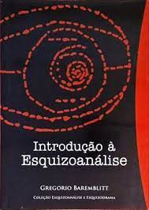
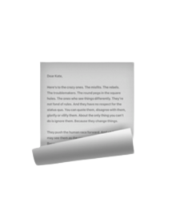

Literatura

As Palavras
(Clarice Lispector)
1943 — 1978
A Paixão
Segundo G.H.
(Clarice Lispector)
Segundo G.H.
1964

[Coleção]
Harry Potter1997 — 2007
Esquizoanálise

Introdução à
Esquizoanálise
(Gregório Baremblitt)
Esquizoanálise
2002

Psicologia, Política
e Esquizoanálise
(Domenico Uhng Hur)
e Esquizoanálise
1998
Psicanálise

Vocabulário de
Psicanálise
(J. Laplanche & J. B. Pontalis)
Psicanálise
1967

"Estarei com você em
sua noite de núpcias": Lacan e o Estranho
(Mladen Dolar)
1991
Psicanálise Pura,
Psicanálise Aplicada
& Psicoterapia
(Jacques-Alain Miller)
Psicanálise Aplicada
& Psicoterapia
2002

Lacan Elucidado:
Palestras no Brasil
(Jacques-Alain Miller)
Palestras no Brasil
2015
O Osso de uma Análise
(Jacques-Alain Miller)
2015

O que é Loucura
(Darian Leader)
2013
Como Trabalha um Psicanalista
(Juan-David Nasio)
1999
O Desejo do Psicanalista como
Operador Ético da Psicanálise
(Júlio Eduardo de Castro)
Operador Ético da Psicanálise
2020
Psicologia

O Normal e o Patológico
(Georges Canguilhem)
1966

12 Regras para a Vida
(Jordan B. Peterson)
2018
História
Casa-grande & Senzala
(Gilberto Freyre)
1933
O Povo Brasileiro
(Darcy Ribeiro)
1995
História do Brasil
(Boris Fausto)
2015
Filosofia

O que é a Filosofia
(Gilles Deleuze
& Felix Guattari)
1991
Sociologia

Microfísica do Poder
(Michel Foucault)
1978
Escrita Literária

Plot: Elements of
Fiction Writing
(Ansen Dibell)
Fiction Writing
1988
Elements of Fiction Writing:
Conflict & Suspense
(James Scott Bell)
Conflict & Suspense
2011
Outros

Breves Respostas
para Grandes Questões
(Stephen Hawking)
para Grandes Questões
2018

The Light in
The Hearth
(Roy T. Bennet)
The Hearth
2020
O ator/xamã e o corpo do abismo:
a realidade do corpo liminar
(Maikon Kempinski)
a realidade do corpo liminar
2008